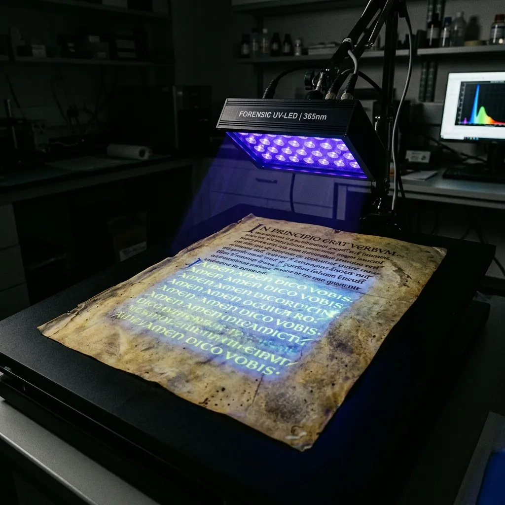

Multispectral Recovery and Archival Conservation of Ancient Palimpsest Manuscripts
Codex Parallax Laboratory recovers erased lower-layer texts and stabilizes medieval vellum codices for monastic archives and Vatican libraries.
Multispectral Palimpsest Recovery & Enzymatic Vellum Stabilization
In medieval scriptoria, costly calfskin parchment was routinely scraped clean with pumice stone and overwritten with newer liturgical texts, burying priceless classical and early Christian treatises beneath visible script. We utilize narrow-band multispectral imaging from 365nm ultraviolet to 1050nm near-infrared to excite the chemical residual fluorescence of erased iron-gall inks without touching the delicate vellum. Combined with rigid gellan-gum enzymatic cleaning, our laboratory restores unreadable palimpsests while preserving the structural integrity of ancient animal-skin collagen.
Recovering the scriptio inferior—the erased lower text of a palimpsest—requires isolating the minute chemical residues of iron-gall ink embedded deep within the collagen matrix of the parchment. When illuminated by narrow-band 365nm ultraviolet LEDs, iron tannate compounds absorb UV radiation and quench the natural fluorescence of the surrounding vellum, causing buried letters to appear as high-contrast dark silhouettes against a glowing background. Our sixteen-channel multispectral camera captures these discrete spectral bands at fifty-micron resolution, processing the raw image stack through principal component analysis to separate overlapping text layers cleanly.
Parchment conservation demands an equally non-destructive physical approach. Standard aqueous cleaning methods introduce free water into gelatinized vellum, causing irreversible collagen swelling, cockling, and pigment flaking. Codex Parallax utilizes rigid, pre-hydrated gellan-gum gels that act as molecular sponges. Placed directly onto the manuscript surface, the gel releases micro-titrated moisture into dirty surface accretions while simultaneously absorbing solubilized soot and wax, leaving the underlying parchment dry, flat, and chemically stable.
Once imaged and stabilized, each folium is mounted in a custom micro-tension housing lined with acid-free Japanese tissue and UV-filtering museum acrylic. This floating mounting system allows the vellum to expand and contract naturally with ambient relative humidity shifts, preventing mechanical stress on fragile binding structures. Through this fusion of optical physics and non-aqueous conservation science, we ensure that recovered ancient texts remain legibly visible and physically secure for future paleographical study.
16-Band Spectral Imaging & Image Processing
16-Channel Narrow-Band LED Array
Our imaging rig utilizes a highly calibrated LED array capable of emitting sixteen discrete spectral bands, extending from 365nm ultraviolet to 1050nm near-infrared. This extensive bandwidth allows us to target specific molecular absorption rates. Because iron-gall ink absorbs UV light while carbon soot transmits near-infrared frequencies, the system can selectively expose text hidden beneath severe dirt and centuries of carbon buildup without altering the parchment.
150MP Monochrome Metrology Sensor
We deploy a 150-megapixel medium-format monochrome sensor specifically designed for scientific metrology. Stripped of typical Bayer color filters, this sensor records raw photon counts with absolute fidelity, delivering 16-bit dynamic range per channel. The fifty-micron spatial resolution ensures that even the most microscopic pen strokes, heavily degraded by pumice scraping, are captured with clinical precision.
Principal Component Analysis (PCA) Software
The sixteen discrete images generated during a single scan are not simply stacked; they are processed via complex statistical extraction. Principal Component Analysis software identifies the variance between the spectral layers, algorithmically separating the overlapping upper text from the erased lower text based on their differing chemical signatures, creating a pristine mathematical reconstruction of the original script.
By applying false-colour compositing to the PCA outputs, our laboratory effectively isolates the scriptio inferior from the overwriting. By assigning distinct, non-overlapping colour channels (typically cyan and red) to the separated statistical layers, the illegible mass of overlapping medieval ink is transformed into a highly legible, high-contrast digital map. The erased text illuminates brilliantly against the background, rendering complex linguistic analysis possible.

This false-colour methodology is entirely non-destructive and requires absolutely zero chemical reagents to be applied to the vellum. Archivists can thereby access the lost classical treatises without risking the structural integrity of the upper liturgical texts, achieving a perfect balance between modern digital extraction and rigorous physical conservation.
Non-Aqueous Gellan Gel & Collagen Conservation
Rigid Gellan Gels
We employ 4% rigid gellan-gum cast into perfectly flat gel slabs. These acting molecular sponges sit upon the vellum, drawing out ingrained carbon soot and surface dirt through capillary action. Crucially, the gel matrix prevents free water from penetrating the collagen structure, ensuring the parchment remains dimensionally stable and eliminating the risk of catastrophic cockling associated with traditional aqueous baths.
Proteolytic Enzyme Baths
For heavily degraded manuscripts suffering from severe animal-glue adhesions or fungal accretions, the gellan gels can be pre-loaded with highly specific proteolytic enzymes. These enzymes operate at the gel-parchment interface, chemically digesting the targeted organic adhesives without affecting the underlying keratin and collagen networks of the calfskin, allowing for the safe separation of bound folios.
Micro-Tension Humidification
Following cleaning, desiccated vellum is relaxed in a controlled Gore-Tex chamber that permits only water vapor—not liquid droplets—to interact with the fibers. Once optimal flexibility is achieved, the folio is mounted using non-adhesive Japanese tissue hinges on an anodized aluminum micro-tension frame. This frame dynamically responds to ambient climate shifts, preserving the document's elasticity indefinitely.
Featured Manuscript Recovery Projects
The St. Gall Palimpsest (8th Century Greek Geometry)
Originally overwritten in the 12th century with common liturgical chants, this severely scraped codex revealed an exceptional 8th-century Greek mathematical treatise under 365nm UV excitation. The iron-gall ink residue, though invisible to the naked eye, fluoresced strongly enough for our PCA algorithms to generate a complete, high-contrast false-colour map of the original diagrams.
Vatican Rescriptus Codices (10th Century Liturgy)
This collection suffered from profound collagen hydrolysis and severe mold staining. Our team deployed pre-hydrated gellan gels to safely lift the fungal accretions without wetting the vellum. Subsequent multispectral scanning penetrated the remaining carbon soot, allowing Vatican archivists to translate the hidden 10th-century script entirely.
Sardinian Monastic Charter (12th Century Legal Text)
Severely damaged by fire and water, the blackened parchment was completely unreadable. Utilizing the 1050nm near-infrared bandwidth, which penetrates deep carbon char, we successfully separated the legible ink strokes from the burned substrate. The fragile folios were then secured in micro-tension acrylic mounts to prevent further fragmentation.
The initial state of these palimpsests typically presents as a chaotic, impenetrable mass of faded ink and severe physical degradation. However, by strictly separating the optical recovery from the physical stabilization, we guarantee that the original artifact suffers absolutely zero mechanical stress. The multispectral arrays extract the data mathematically, while the enzymatic gels perform surgical cleaning without altering the parchment's native chemistry.
These case studies represent the pinnacle of modern forensic paleography. By delivering uncompressed 16-bit digital matrices to international archivists, we provide them with the definitive toolset to decipher erased histories. The physical codices remain safely stabilized in our micro-tension frames, ensuring their survival for future generations of scholars.
Requisition a Spectral Manuscript Assessment
The Codex Parallax Laboratory offers secure, climate-controlled intake protocols for international archival institutions. For extremely fragile codices, we deploy our portable field scanner directly to monastic and library vaults. Please note that all transported manuscripts require rigorous insurance verification and travel exclusively within sealed, nitrogen-purged climate-controlled cases.